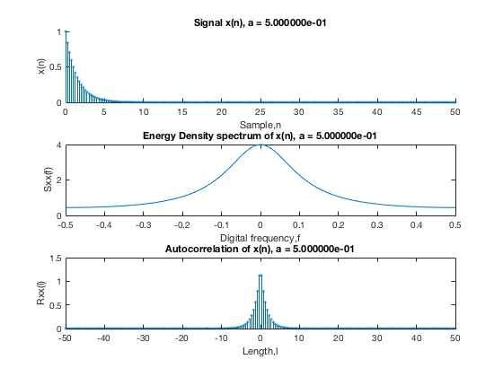
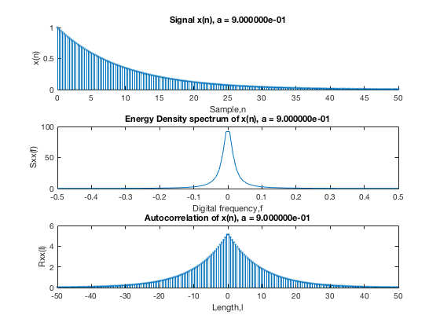
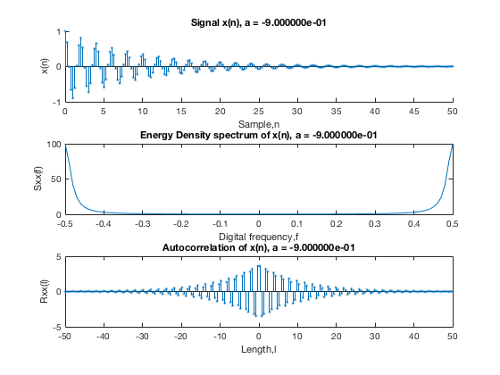

Contents
clc; clear; close all;
Problem 1
c)
Plot x(n)
%set(0,'defaultaxescolororder'); %set(0,'defaultaxescolororder',[0 0 0; 0.5 0.5 0.5]) %black and gray set(0,'defaultaxeslinestyleorder',{'-','.-','--'}) %or whatever you want f = linspace(-0.5,0.5,1e2); n = linspace(0,50,200); l = linspace(-50,50,200); % Plot x(n), Sxx(f), Rxx(l) for a=0.5 for a = [0.5 0.9 -0.9]; x = a.^n; % signal Sxx = 1./(1-2*a*cos(2*pi*f)+a^2); % Energy density spectrum rxx = a.^abs(l)/(1-a^2); % autocorelation figure(); subplot(3,1,1); hold on; stem(n,real(x), '.'); title(sprintf('Signal x(n), a = %i',a)); xlabel('Sample,n'); ylabel('x(n)'); subplot(3,1,2); plot(f,Sxx); title(sprintf('Energy Density spectrum of x(n), a = %i',a)); xlabel('Digital frequency,f'); ylabel('Sxx(f)'); subplot(3,1,3); stem(l,real(rxx), '.'); title(sprintf('Autocorrelation of x(n), a = %i',a)); xlabel('Length,l'); ylabel('Rxx(l)'); end; hold off;  
Result
With a = 0.5 the signals rate of change is much higher. This is due to more high frequency components than a=0.9, this also makes the enerdy density spectrum wider. The correlation of two samples l lenght appart is thus much smaller (less similar) When a=-0.9 signals change a lot more rappid than a=0.5 and 0.9, for samples next to each other, but are similar for 3 and three samples (at this number of data points). The autocorrelation between groups is negative, while inside each group the the correlation is high. This gives the doubble sided pyramid autocorrelation function. The energy density spectrum show that the signal only contains high frequency components. (eg all the energy in the signal is at higher frequencies).
d)
a = 0.5; x = a.^n; h = cos(2*pi*f)-a*w*cos(2*pi*f);
Undefined function or variable 'w'. Error in ex05_p01 (line 42) h = cos(2*pi*f)-a*w*cos(2*pi*f);